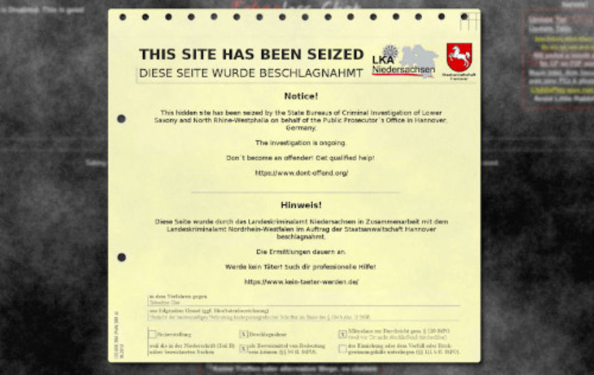

Tabooless/Staufen Case: Main Defendants Sentenced
~2 min read | Published on 2018-07-22, tagged General-News using 465 words.
The “stepfather” of the sexually assaulted nine-year-old boy played the long game in the Staufen child abuse case that made mainstream headlines after German police ended Tabooless Chat—a darknet chatroom used by many of the offenders.Backstory
Prior to the Tabooless Chat takedown, the District Court of Freiburg heard a case involving the ritualistic abuse of a nine-year-old boy that his mother and her partner had enabled and encouraged. The man, Christian L. aka “GeilerDaddy” on PlayPen, had decided to help the prosecution to the point where where the court head to repeatedly question his motive for aiding German cybercrime teams arrest other Tabooless Chat members who had raped his nine-year-old “stepson.”
[img=]Christian L[/img]
<h4 id="the-courts-concern">The Court’s Concern </h4>
The District Court of Freiburg, on numerous occasions, made sure Christian L. knew that his actions would not benefit him with regard to sentencing. Yet Christian L., unlike the boy’s mother, helped the police identify, entrap, arrest, convict, and imprison all but (as of this article) one suspected rapist. The boy’s mother effectively refused to speak at all.Sentencing <h4 id="christian-l">Christian L. </h4>
Due to his “constant cooperation,” desire to seek therapy, and alleged charm in the courtroom, the “stepfather” managed to leave the courtroom with a sentence of 13.5 years. Part in prison and part—the court believes—in our attending some form of treatment for his sexual interest in children.
He told the court, “this preference is not selected but born in the cradle.” His attorney explained that he had known of his sexual interests since his teenage years. The boy’s mother, Berrin T., received a 14.5 year prison sentence and an even lengthier protection order.

Tabooless Chat
<h4 id="the-prosecution">The Prosecution </h4>
The outcome surprised many; even prosecutor Nikola Novak, who had initially wanted a much lengthier sentence for Christian L, had made her decision on day nine of the 22 day trial. L. also voluntarily sought treatment and showed an interest on other humans. While in jail awaiting her trial, the prosecution learned that Berrin T. had not once asked about her child. “Only her cigarette supply,” someone testified.
Related: Tabooless Chat Admin Sentenced to Prison<h4 id="arguments">Arguments </h4>
Both sides came in with their own defense. Berrin T. told the court how she loved her son and only want to prevent the government from taking custody of him. Christian L. and his lawyer hardly sugar coated the man’s behavior. Berrin T.’s defensive strategy stood no chance after the court heard how she had not even asked about her son’s well-being while in custody.
A psychiatric evaluator testified at the hearing and to Christian L.’s perceived likeableness. “Christian L. appears on a formal level to be friendly and open-minded, but [underneath] he has manipulative features and a dissocial personality disorder,” the expert witness testified. And yet, albeit minimally, Christian L. fared better due to his involvement with the police.